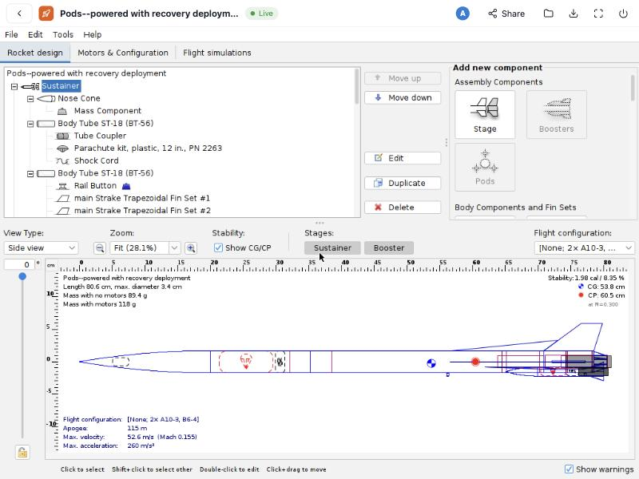
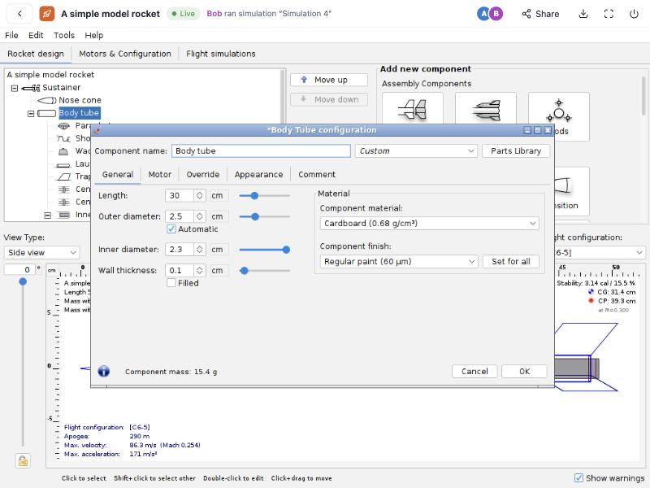

Design rockets together, in the browser.
OPuhRohCum runs the real OpenRocket on your server and streams it to everyone's browser. Your whole team edits the same design and sees every change instantly, with nothing to install on their computers.

The OpenRocket you know, now multiplayer
Nothing in OpenRocket is reimplemented: the same simulator, the same windows and dialogs, the same results. OPuhRohCum adds the parts a team needs.
Unchanged OpenRocket
Each person gets the official OpenRocket 24.12 release, checksum-verified. Physics engine and interface are exactly the desktop app.
Live sharing
Edits appear in everyone's OpenRocket within a second, and dialogs you have open stay open. Undo reverts only your own changes.
Google sign-in & sharing
Sign in with a Google account. Share designs by email as can edit or can view, and see who is online and what they selected.
Edit history
Who changed what and when, down to the value: “Nose cone · Length: 10 cm → 14 cm”. Undo one person's change or restore any earlier moment.
Custom motors
Upload .eng or .rse thrust curves. They appear in OpenRocket's motor selector for everyone working on the design.
Your files, always
Upload any .ork, download it back for desktop OpenRocket at any time, and grab anything you export (CSV, PDF, RockSim). Everything saves continuously.
See it in action
Screenshots from a real session with two test users.



.eng file in OpenRocket's own motor selector.
How it works
Your users only need a web browser. The heavy lifting happens on the computer you install OPuhRohCum on.
One OpenRocket per person
When someone opens a design, the server starts the official OpenRocket for them in its own container and streams its screen to their browser.
Edits are merged
A small add-on inside OpenRocket notices what you changed and sends it, one property at a time, to the server, which puts all edits in one order.
Everyone updates
Each person's OpenRocket applies the others' changes the way OpenRocket's own file loader would. The design and history are saved continuously.
Install
Install it once on a computer or server; your team then uses it from any browser.
- Get a machine with Docker. A Linux server (any cloud provider) is best for a team; a Mac or Windows PC with Docker Desktop works for trying it out. Plan about 1 GB of memory per person working at the same time.
- Run the installer and answer a few questions (address, optional Google keys):
curl -fsSL https://raw.githubusercontent.com/spacegit09/openrocketcloud/main/install.sh | bash
- Open the address it prints. On a server with a domain name, HTTPS is set up automatically (ports 80 and 443 must be open).
- Turn on Google sign-in with the 5-minute setup below, then invite your team.
What the installer does. It downloads three small setup files into ~/openrocketcloud, writes your answers to ~/openrocketcloud/.env, downloads the ready-made images (about 1.5 GB the first time), and starts everything.
Update: run the same command again. Your settings and designs are kept.
Prefer to build it yourself? Clone the repository and run docker compose up -d --build. Details are in the README.
Google sign-in setup
Google requires every site that offers “Sign in with Google” to register once. It's free and takes about five minutes.
- Open Google Cloud Console, sign in, and create a project (any name).
- Search for Google Auth Platform and click Get started: app name
OPuhRohCum, your email for support and contact, audience External. - Under Audience, click Publish app so any Google account can sign in, or add your team as test users.
- Under Clients, click Create client → Web application, and add this redirect URI with your own address:
https://your-address/auth/google/callback - Copy the Client ID and Client secret into the installer, or into
~/openrocketcloud/.envasGOOGLE_CLIENT_IDandGOOGLE_CLIENT_SECRET, and run the installer again.
To let only certain people in, set ALLOWED_EMAIL_DOMAINS=yourschool.org or ALLOWED_EMAILS=… in .env.
FAQ
Is it really the same as desktop OpenRocket?
Yes. Every session runs the unmodified OpenRocket 24.12 release. Designs download as normal .ork files that open in desktop OpenRocket.
Do my teammates need to install anything?
No, just a modern web browser. On a Mac, ⌘-shortcuts are mapped to the Ctrl-shortcuts OpenRocket expects.
What happens if two people change the same thing at once?
Different properties merge cleanly. For the same field at the same moment, the later edit wins, and the edit history lets you undo either one.
How big a server do I need?
Each open design uses roughly 0.6–1 GB of memory. A server with 8 GB serves about 5 people at once; 16 GB about 10–12.
Where is my data, and how do I back it up?
On your own server, in one Docker volume (orcloud-data) holding a SQLite database. The README shows a one-line backup command.
Is this made by the OpenRocket team?
No. OPuhRohCum is an independent project built around the official OpenRocket release. OpenRocket is © the OpenRocket team and licensed under GPL-3.0, as is this project.